Ubuntu adalah salah satu distro Linux. Linux sendiri adalah OS yang menggunakan kernel linux, yaitu bagian yang melakukan managemen cpu, memori dan perangkatnya. Linux ini adalah OS yang open source, yang berarti dapat kita modifikasi dan distribusikan secara bebas dan gratis. Hal ini berbeda dengan OS lainnya misal seperti windows yang kita harus membayar lisensi OS dan software yang kita pakai didalam, untuk linux segala hal tersebut gratis. Dikarenakannya linux open source, untuk pengembangannya banyak versi distro yang dibuat oleh developer-developer komunitas. Misal yang dibahas kali ini adalah cara install distro ubuntu.
Siapkan media bootable untuk install
Untuk mendownload file ubuntu kita dapat langsung mendownloadnya di website resmi ubuntu.
Seteleh filenya didownload, kita dapat membuat media bootable menggunakan DVD atau flashdisk. Untuk proses setting bootablenya mungkin tidak saya jelaskan lebih lengkap disini.
Proses Install
Setelah selesai memasang bootable drivenya. Awal penginstalan ubuntu linux akan ada proses loading seperti ini.
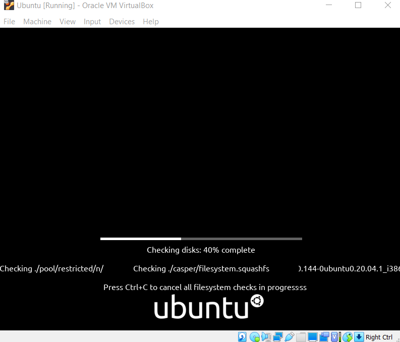Setelah loading selesai. Disini kita memilih bahasa dan install ubuntu.
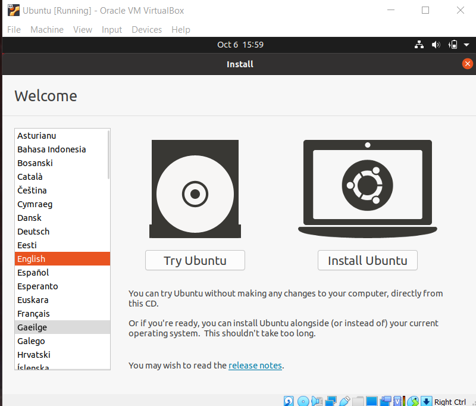Disini kita memilih keyboard apa yang kita gunakan.
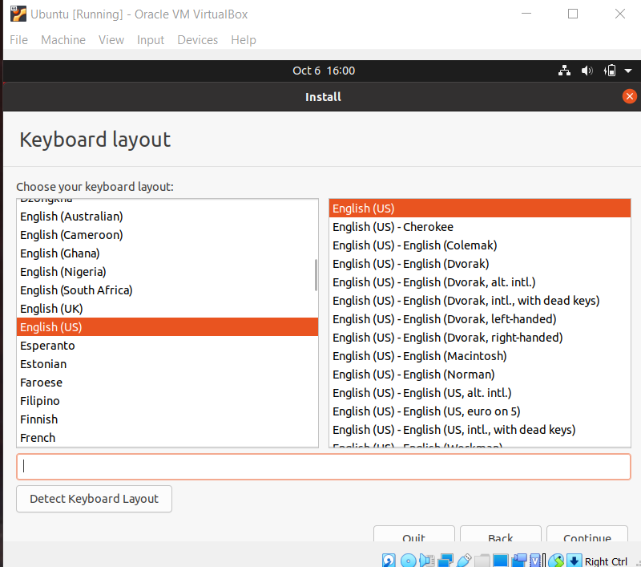Pada menu ini kita memilih opsi instalasi,Kita memilih normal installation karena kita ingin menginstall semua fiturnya.
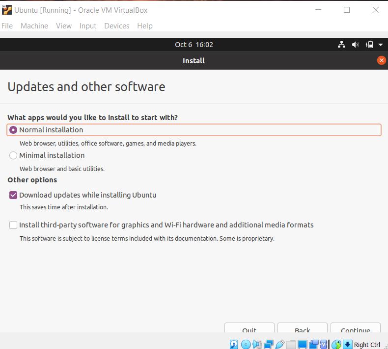Disini kita memilih tipe installnya, erase disk and install ubuntu akan mengapus semua file yang
kita punya jadi kita akan melakukan fresh install.
Sedangkan 'something else' kita memilih dan mengatur partisi kita sendiri.
Disini kita memilih tempat wilayah atau region kita berada.
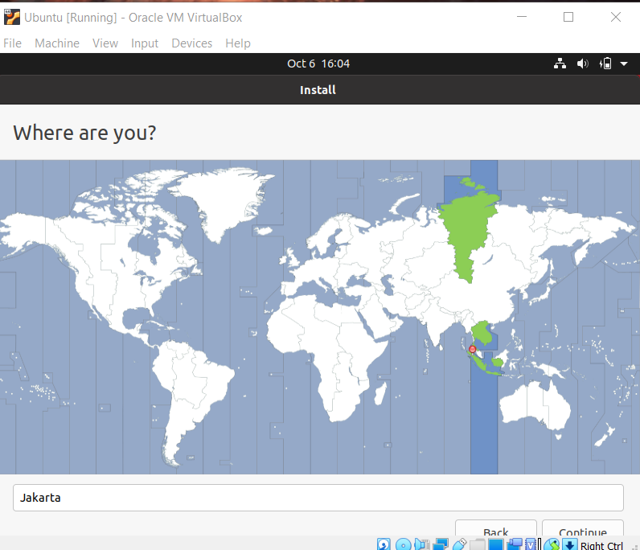Disini kita mengisi nama, username, dan password.
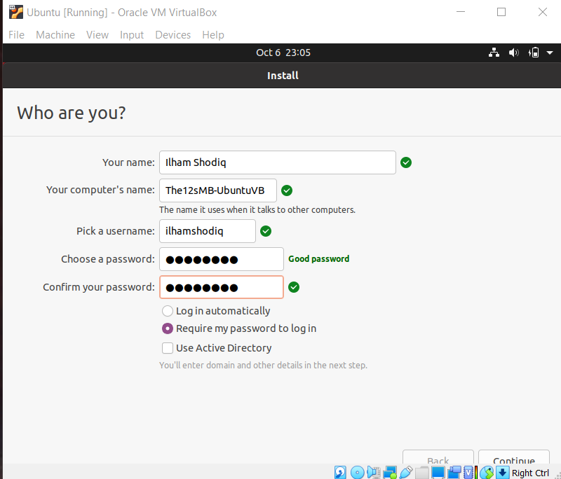Setelah melakukan pengisian registrasi user. Proses instalasi akan berjalan
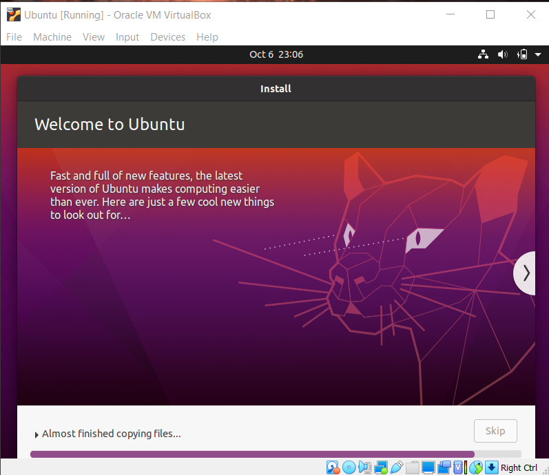Setelah instalasi selesai akan ada alert untuk memerintahkan kita merestart komputer.
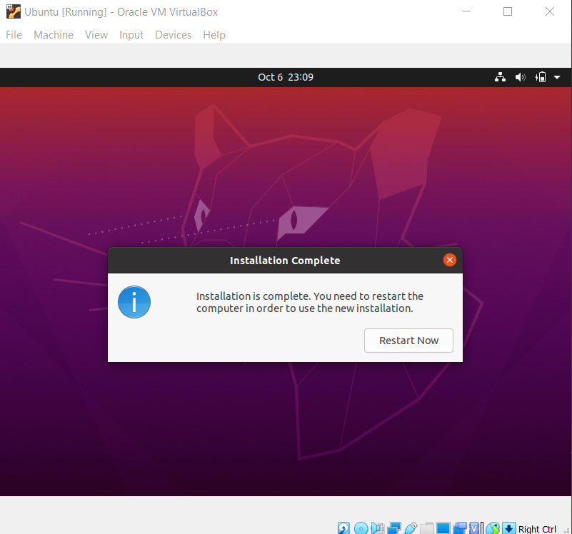Disini proses restart komputer berjalan.
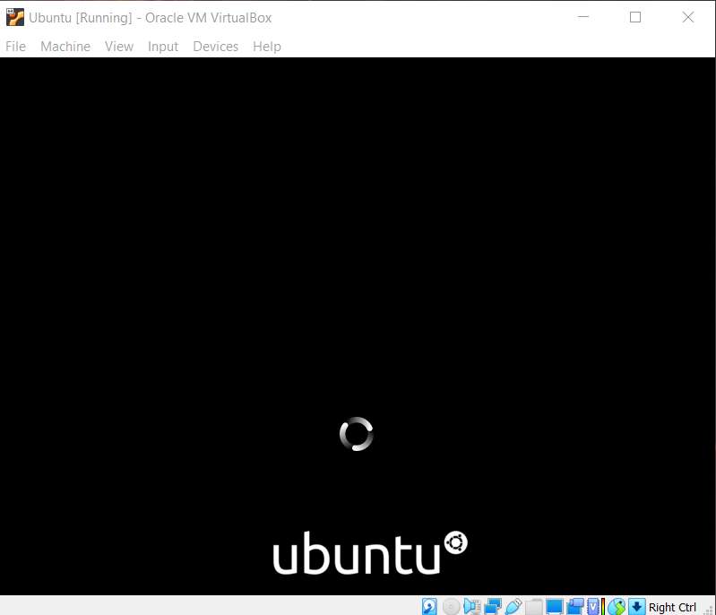Setelah restart selesai kita memilih user yang telah kita buat tadi untuk login.
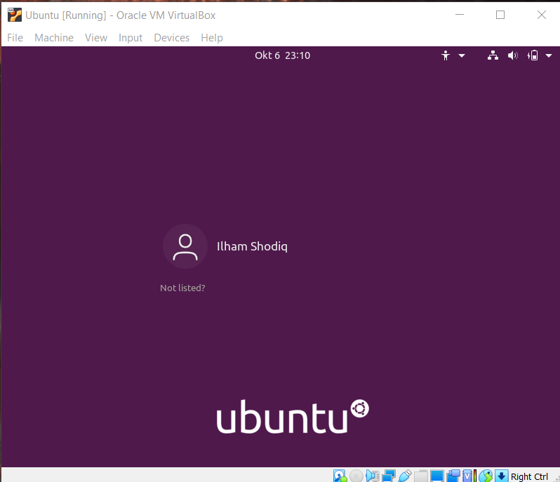Disini proses instalasi distro ubuntu telah selesai.
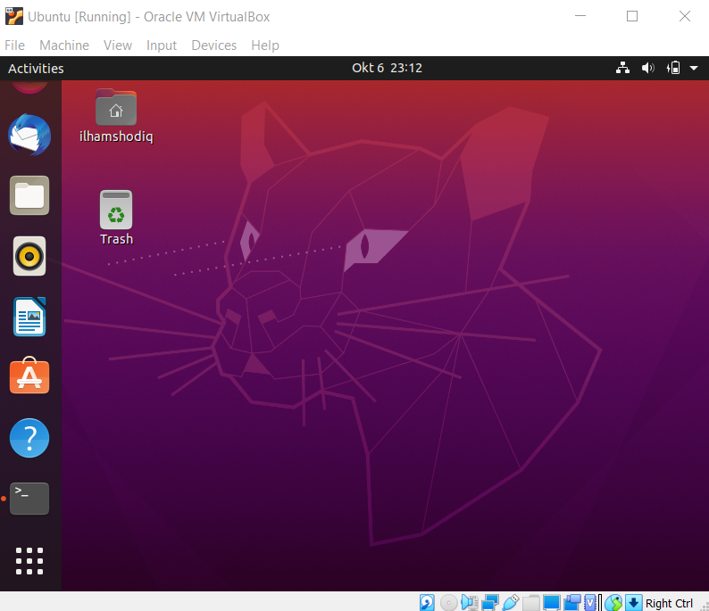